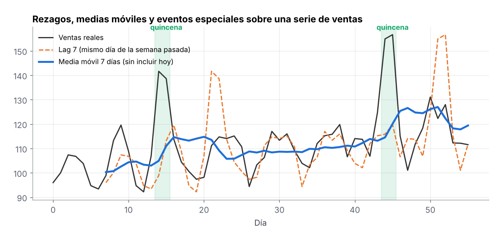

1 Ingeniería de Variables para Banca y Riesgo Crediticio
Variables que describen la capacidad y el comportamiento de pago de un cliente a partir de su historial de cuentas, saldos y pagos.
1.1 Ratios (A/B)
Relacionan dos montos para hacerlos comparables entre clientes de distinto tamaño. Ejemplos: utilización de la línea (saldo / límite), pago / pago mínimo, deuda / ingreso. Una utilización arriba de 80% suele anticipar problemas de pago.
1.2 Variables Rezagadas (Lag)
El valor de una variable en meses anteriores: saldo hace 1, 3 y 6 meses, días de atraso del mes pasado. Permiten al modelo ver la historia reciente del cliente.
1.3 Ventanas Móviles
Estadísticos calculados sobre los últimos n meses: pago promedio de 3 meses, número de atrasos en 12 meses, saldo máximo en 6 meses.
1.4 Variables de Crecimiento
Cambio porcentual entre periodos, como el crecimiento del saldo contra hace 3 meses. Un endeudamiento que crece rápido es señal de riesgo.
1.5 Variables de Tendencia
Pendiente de una regresión simple sobre los últimos n meses: indica si el saldo o los atrasos van al alza o a la baja, con menos ruido que comparar solo dos meses.
1.6 Volatilidad
Desviación estándar o coeficiente de variación de saldos y pagos. Un cliente con ingresos o pagos muy irregulares tiene más riesgo que uno estable con el mismo promedio.
1.7 Ranking y Percentiles
Posición del cliente respecto a su segmento (por ejemplo, percentil de utilización dentro de su producto). Hace comparables variables con escalas muy distintas.
1.8 Variables Acumuladas
Totales desde el inicio de la relación: meses con atraso acumulados, total pagado, número de créditos previos. Resumen el historial completo del cliente.
# Ejemplo en pandas: una fila por cliente y mes
df = df.sort_values(['cliente', 'mes'])
g = df.groupby('cliente')
df['utilizacion'] = df['saldo'] / df['limite']
df['saldo_lag3'] = g['saldo'].shift(3)
df['atrasos_12m'] = g['atraso'].transform(lambda s: s.rolling(12, min_periods=1).sum())
df['crec_saldo_3m'] = g['saldo'].pct_change(3)
df['vol_pago_6m'] = g['pago'].transform(lambda s: s.rolling(6).std())2 Ingeniería de Variables para Forecasting
Variables para pronosticar ventas, demanda o retiros de efectivo. Regla de oro: usar solo información disponible antes del momento que se pronostica, para evitar fuga de información.
2.1 Variables Rezagadas (Lag)
La demanda de hace 1, 7 o 14 días. El rezago de 7 días captura el patrón semanal (el lunes se parece al lunes anterior).

2.2 Media Móvil
Promedio de los últimos n días. Suaviza el ruido y da el nivel base de la serie. Siempre se calcula con un desplazamiento (shift) para no incluir el día que se quiere predecir.
2.3 Máximo y Mínimo Móvil
Valores extremos de los últimos n días. Ayudan a anticipar picos y a dimensionar inventarios de seguridad.
2.4 Desviación Estándar Móvil
Variabilidad reciente de la serie. Cuando sube, el pronóstico es menos confiable y conviene un margen de seguridad mayor.
2.5 Tendencias
Indicadores de crecimiento de largo plazo: un contador de tiempo, la pendiente de los últimos n periodos o la diferencia entre una media móvil corta y una larga.
2.6 Estacionalidad
Patrones que se repiten por calendario: día de la semana, día del mes, mes, quincena, temporada. Se codifican como categorías o con funciones seno y coseno para que el modelo entienda que diciembre está cerca de enero.
2.7 Eventos Especiales
Indicadores de días atípicos: festivos, días de pago de nómina o pensión, Buen Fin, promociones, cierres de sucursal. Suelen ser las variables que más mejoran un pronóstico.
2.8 Acumulados
Ventas acumuladas del mes o del año a la fecha, útiles para comparar el avance contra la meta o contra el mismo periodo del año anterior.
# Una fila por sucursal y día
g = df.sort_values('fecha').groupby('sucursal')['ventas']
df['lag_7'] = g.shift(7)
df['media_7'] = g.transform(lambda s: s.shift(1).rolling(7).mean())
df['max_14'] = g.transform(lambda s: s.shift(1).rolling(14).max())
df['std_14'] = g.transform(lambda s: s.shift(1).rolling(14).std())
df['dia_semana'] = df['fecha'].dt.dayofweek
df['es_quincena'] = df['fecha'].dt.day.isin([15, 30, 31]).astype(int)3 Ingeniería de Variables para Retail
Variables a nivel cliente, producto o tienda para entender el comportamiento de compra.
3.1 RFM
Resume a cada cliente en tres medidas: Recencia (días desde su última compra), Frecuencia (número de compras) y Monto (gasto total). Es la base de la segmentación de clientes.
3.2 Ratios (A/B)
Fill rate (piezas surtidas / piezas pedidas), margen (utilidad / venta), devoluciones / ventas, venta por metro cuadrado.
3.3 Media Móvil
Venta promedio de las últimas semanas por producto y tienda: el nivel base para planear reabastecimiento.
3.4 Lags
Venta de la misma semana del año anterior o de la semana pasada, para comparar y pronosticar.
3.5 Ticket Promedio
Venta total entre número de tickets. Separa si una tienda vende más porque llegan más clientes o porque cada uno compra más.
3.6 Frecuencia de Compra
Número de compras en un periodo o días promedio entre compras. Detecta clientes frecuentes y los que están espaciando sus visitas.
3.7 Recencia
Días desde la última compra. Un cliente que solía venir cada semana y lleva un mes sin volver es una alerta de abandono.
3.8 Canasta de Compra
Número de artículos por ticket, categorías distintas compradas y productos que se compran juntos (reglas de asociación). Sirve para promociones cruzadas y acomodo en tienda.
# RFM por cliente a partir de una tabla de tickets
hoy = tickets['fecha'].max()
rfm = tickets.groupby('cliente').agg(
recencia = ('fecha', lambda f: (hoy - f.max()).days),
frecuencia = ('ticket', 'nunique'),
monto = ('total', 'sum'))
rfm['ticket_prom'] = rfm['monto'] / rfm['frecuencia']4 Ingeniería de Variables para Detección de Fraude
Variables que comparan una transacción con el comportamiento normal del cliente; el fraude suele verse como un cambio brusco.
4.1 Ratios (A/B)
Monto de la transacción entre el monto promedio del cliente. Una compra 10 veces mayor que lo habitual es sospechosa.
4.2 Frecuencia de Eventos
Número de transacciones en la última hora o en el último día, intentos fallidos, comercios distintos. Muchas operaciones en poco tiempo es un patrón típico de fraude.
4.3 Recencia
Tiempo desde la transacción anterior, desde el último cambio de contraseña o desde el alta de un dispositivo nuevo.
4.4 Ventanas Móviles
Montos y conteos en ventanas de minutos, horas y días. Se comparan ventanas cortas contra largas para detectar aceleraciones.
4.5 Volatilidad
Variabilidad de montos, horarios y ubicaciones del cliente. Un cliente muy regular que de pronto cambia de patrón merece revisión.
4.6 Ranking
Percentil del monto de la transacción dentro del historial del cliente o dentro del comercio.
# Transacciones de la última hora por tarjeta (ventana de tiempo)
tx = tx.sort_values('timestamp').set_index('timestamp')
tx['tx_ultima_hora'] = tx.groupby('tarjeta')['monto'].transform(lambda s: s.rolling('1h').count())
tx['ratio_monto'] = tx['monto'] / tx.groupby('tarjeta')['monto'].transform(lambda s: s.expanding().mean().shift(1))5 Ingeniería de Variables para Marketing y Churn
Variables para predecir qué clientes van a dejar el servicio (churn) y a quién dirigir campañas.
5.1 RFM
Igual que en retail: recencia, frecuencia y monto. Los clientes con recencia alta y frecuencia en caída son los primeros candidatos a abandonar.
5.2 Ratios (A/B)
Tasa de apertura de correos, clics / impresiones, uso actual / uso promedio, quejas / interacciones.
5.3 Media Móvil
Uso promedio del servicio en las últimas semanas, para medir el nivel de actividad reciente.
5.4 Lags
Uso o gasto del mes anterior, para detectar caídas.
5.5 Frecuencia
Número de interacciones, inicios de sesión o compras por periodo.
5.6 Recencia
Días desde la última interacción con la marca.
5.7 Tendencias
Pendiente del uso en los últimos meses. Un uso que cae de forma sostenida anticipa el churn mejor que un solo mes malo.
6 Ingeniería de Variables para Manufactura
Variables a partir de sensores y registros de producción para mantenimiento predictivo y control de calidad.
6.1 Ratios (A/B)
Piezas defectuosas / piezas producidas, tiempo productivo / tiempo disponible (base del OEE), consumo de energía por pieza.
6.2 Media Móvil
Temperatura, vibración o presión promedio de los últimos minutos u horas para eliminar el ruido del sensor.
6.3 Lags
Lecturas anteriores del sensor, para capturar la dinámica de la máquina.
6.4 Volatilidad
Desviación estándar móvil de las lecturas. Un aumento de la vibración suele anticipar una falla.
6.5 Tendencias
Pendiente de la temperatura o el desgaste en las últimas horas, para estimar cuánto falta para llegar a un umbral crítico.
6.6 Acumulados
Horas de operación desde el último mantenimiento, ciclos acumulados, piezas producidas en el turno.
 Conocimiento
Conocimiento